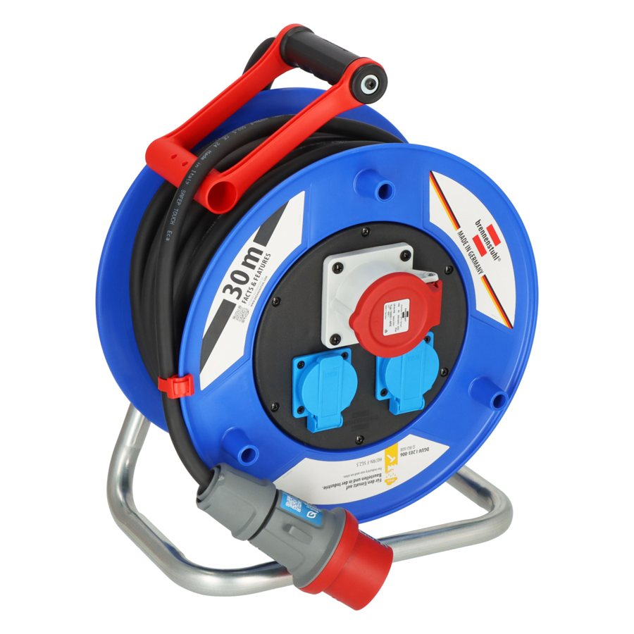
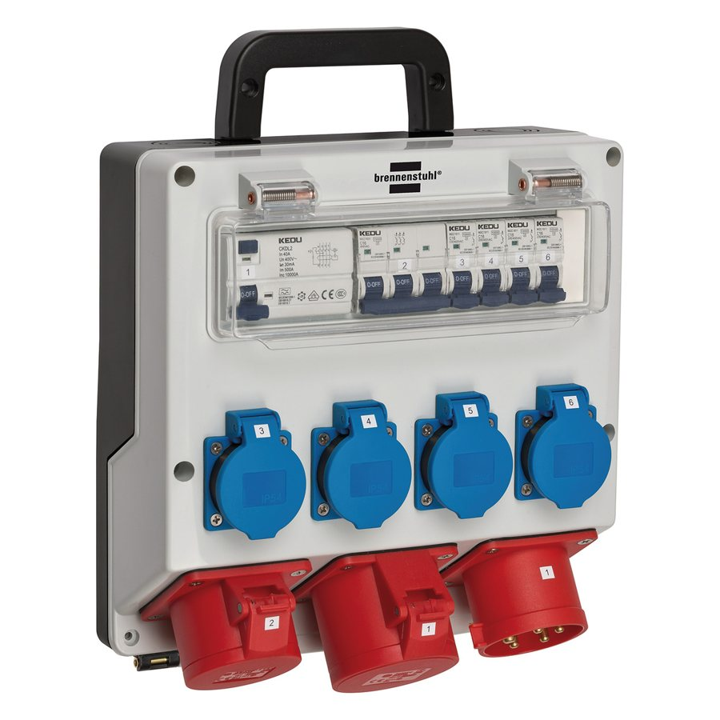
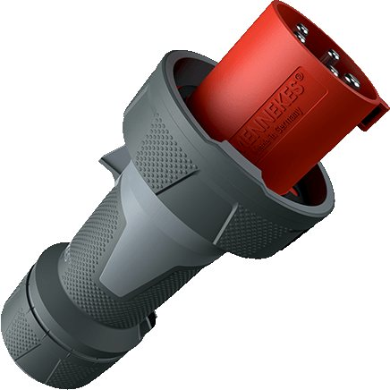
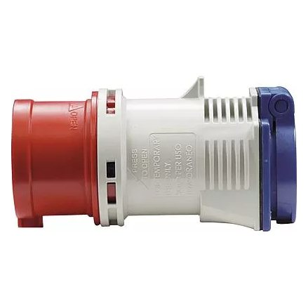
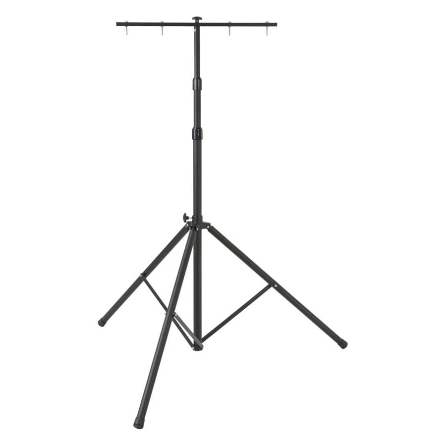
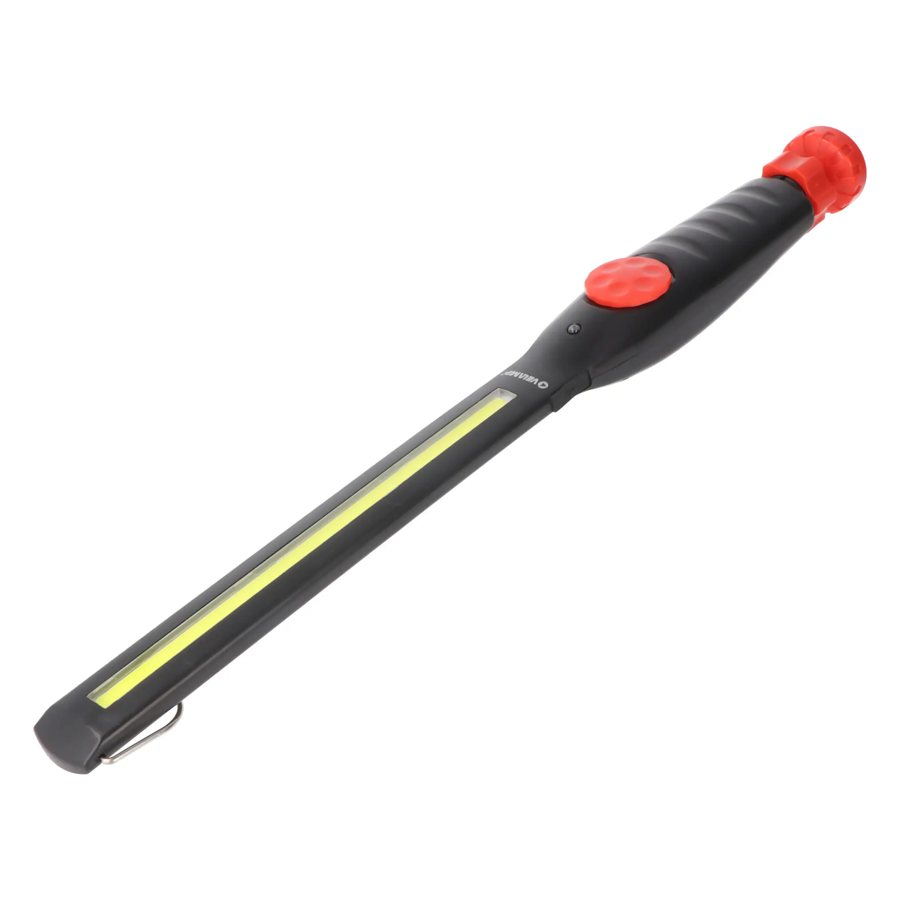
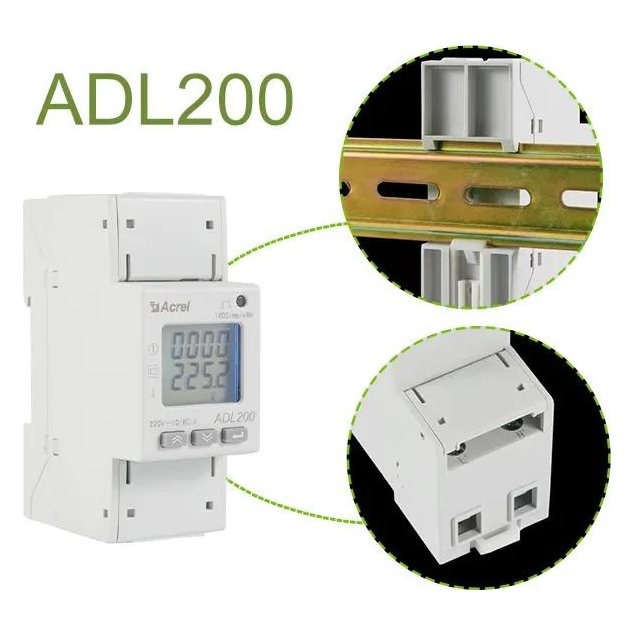
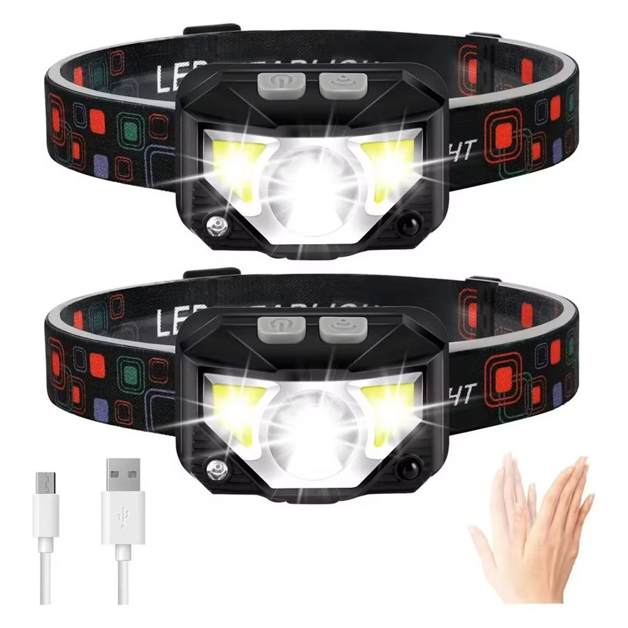

图片仅供参考，展示产品类型。
工地供电与照明
橡胶护线板 5通道 重型
用于行人区域的多通道护线板。
重型橡胶5通道护线板，保护电缆并防绊倒。用于工地和活动。
技术参数
| 通道 | 5 |
|---|---|
| 材料 | 橡胶 |
| 用途 | 按等级行人/车辆 |
| 海关编码（HS） | 40169300 |
欧盟标准与法规
GPSR (EU) 2023/988产品安全REACH (EG) 1907/2006化学品（PAH）
本类别其他产品

H07RN-F 3G2.5mm² 橡套软电缆用于工地移动供电的重型橡套电缆,可在室外及潮湿环境下使用。

工地电缆盘 25米 H07RN-F 3G1.5 IP44防溅水塑料电缆盘,配25米橡套电缆和多个Schuko插座,适用于施工现场。

CEE 400V 电缆盘 25米 H07RN-F 5G2.5 IP44带CEE插头和CEE插座的三相电缆盘,用于工地除湿机、除尘抽风设备和施工机械供电。

工地配电箱 32A CEE (带漏电保护/空开,IP44)预接线工地配电箱,32A CEE进线,所有插座回路均配漏电保护器和断路器。

4位Schuko橡胶插座分线盒 (方形) IP44 16A带四个Schuko插座的便携橡胶分线盒,可在作业点直接为手持工具、灯具和除尘设备供电。

CEE工业插头 16A 5极 (3P+N+E) 400V IP44紧凑型5极CEE插头,适用于工地较小功率的三相设备、延长线和电缆盘。

CEE工业插头 32A 5极 (3P+N+E) 400V IP44坚固耐用的5极CEE插头,用于工地配电箱、建筑除湿机和除尘抽风设备的三相连接。

CEE工业插头 63A 5极 (3P+N+E) 400V IP67防水型63A CEE插头,用于大型工地的分配电箱、工地起重机、施工升降机和混凝土泵。

CEE工业插头 125A 5极 (3P+N+E) 400V IP67重型125A CEE插头,用于主配电箱、移动发电机和大型工地的电源引入。

Schuko橡胶插头和插座 (耦合器) 16A 230V IP44防溅水整体橡胶Schuko连接器,用于工地单相延长线、手持工具和照明。

100W LED工地投光灯 (带三脚架,IP65)带三脚架的抗冲击LED投光灯,为拆除、清除内装和室内施工提供均匀、低频闪的作业照明。

20W充电式LED工作灯 2000lm IP54 带支架不依赖市电的锂电池充电式工作灯,适用于无工地供电的地下室、竖井和拆除区域。

24V LED灯带 IP65 5米卷 (工地照明灯带)防溅水24V LED灯带,用于工地楼梯间、地下室和狭窄作业区的照明。

CEE 16 A （5 极, 400 V）转 1 位 Schuko 230 V 转换器，IP44从三相 CEE 插座转为一个 Schuko 插座的转换插头：把 400 V 工地电源插座变成可供手持工具和灯具使用的 230 V 插座。

CEE 工业连接器母头 （线端耦合器, 母插）16 A，5 极 （3P+N+E），400 V，IP44CEE 插头的配对件：坚固的 5 极母头，用于用 H07RN-F 电缆自制延长线和电缆盘。

工地灯 3 米伸缩三脚架，带可挂 2 盏灯的横梁可折叠三脚架，灯位高度最高 3 米，横梁可挂两盏工地灯：比把灯放在地面更少眩光。

COB LED 工作灯，USB 充电，可折叠，带磁铁和挂钩扁平、可折叠的充电式手持灯，带 COB 灯带、磁性底座和挂钩，适用于安装、检查和车间作业。

Schuko 延长线 IP44，10 米，H07RN-F 3G1.5 （工地用橡套延长线）成品 10 米橡套电缆，配 Schuko 插头和 IP44 母头，适用于工地、车间和户外。

红白警示隔离栏/路障板，塑料，2,000 × 1,000 mm （工地围挡）轻便、可堆叠的塑料隔离栏，适用于工地、市政施工和活动现场，可选红白反光膜。

移动围栏/工地围挡 3.5 × 2 米，热镀锌 （围栏片, 底座和卡扣为配件）由钢管框架和焊接网片组成的镀锌 3,500 × 2,000 mm 围栏片，无需基础，快速围护工地和活动现场。

CEE壁装插座 16 A 230 V IP44 明装用于配电箱和墙面固定安装的蓝色CEE插座。

导轨式单相电能表 230 V MID RS485用于分配电箱和工地电费分摊的单相导轨电表。

磁吸底座LED鹅颈工作灯用于机床和工作台的柔性磁吸灯。

插入式电能监测插座 16 A 3680 W测量所接设备用电量的插入式插座。

可充电LED头灯 带感应开关带COB泛光与感应的充电头灯。

LED工地串灯 可串联用于工地和厂房的可串联灯串。